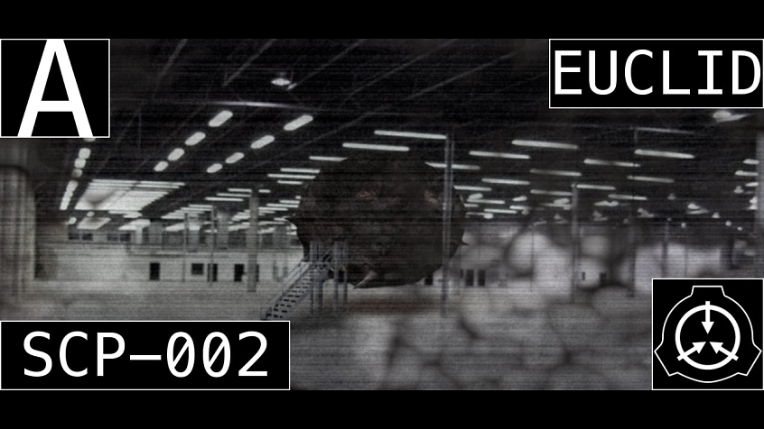
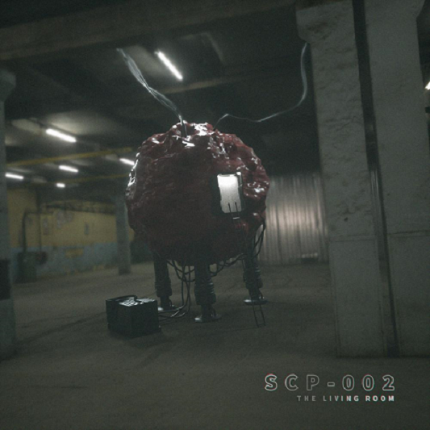

Item #: SCP-002
Object Class: Euclid

Special Containment Procedures:
SCP-002 is to remain connected to a suitable power supply at all times, to keep it in what appears to be a recharging mode. In case of electrical outage, the emergency barrier between the object and the facility is to be closed and the immediate area evacuated. Once facility power is re-established, alternating bursts of X-ray and ultraviolet light must strobe the area until SCP-002 is re-affixed to the power supply and returned to recharging mode. Containment area is to be kept at negative air pressure at all times.
Teams including a minimum of two (2) members are required within 20 meters of SCP-002 or its containment area. Personnel should maintain physical contact with one another at all times to confirm there is another person present, as perception may be dulled, skewed, or influenced by proximity to the object.
No personnel below Level 3 are permitted within SCP-002. This requirement may be waived via written authorization from two (2) off-site Level 4 administrators. Command staff issued such a waiver must be escorted by at least five (5) Level 3 Security personnel for the duration of their contact and must temporarily surrender their rank and security clearance. Following contact, command staff will be escorted at least 5 km from SCP-002 to undergo a seventy-two (72)-hour quarantine and psychological evaluation. If deemed fit for return to duty by psych staff, rank and security clearance may be restored when quarantine expires.
Description:
SCP-002 resembles a tumorous, fleshy growth with a volume of roughly 60 m³ (or 2000 ft³). An iron valve hatch on one side leads to its interior, which appears to be a standard low-rent apartment of modest size. One wall of the room possesses a single window, though no such opening is visible from the exterior. The room contains furniture which, upon close examination, appears to be sculpted bone, woven hair, and various other biological substances produced by the human body. All matter tested thus far show independent or fragmented DNA sequences for each object in the room.
Refer to the Mulhausen Report [cross-ref:document00.023.603] for details related to object's discovery.

These are the most recent pictures of SCP-002. With the right being the only coloured picture.

Reference:
To date, subject has been responsible for the disappearances of seven personnel. It has also in its time at the facility further furnished itself with two lamps, a throw rug, a television, a radio, a beanbag chair, three books in an unknown language, four children's toys, and a small potted plant. Tests with a variety of lab animals including higher primates have failed to provoke a response in SCP-002. Cadavers as well fail to produce any effect. Whatever process the subject uses to convert organic matter into furnishings is apparently only facilitated by the introduction of living humans.
Mulhausen Report docid:00.023.603
The following is a brief report detailing the discovery of SCP-002
Subject was discovered in a small crater in northern Portugal where it struck the Earth from orbit. Encased in a shell of thick rock, the fleshy exterior of the object was exposed by the impact. A native farmer happened upon the site and reported his findings to the village elder. Subject gained SCP attention when a Level 4 agent posted in the area detected a small radioactive anomaly generated by the object.
A collection squad of SCP security personnel led by General Mulhausen was immediately dispatched to the area where they quickly secured the subject in a large container and performed initial testing with subjects recruited from the nearby village. Three men individually sent into the structure subsequently disappeared. Upon discovering this deadly property of the subject, General Mulhausen issued a Level 4a Termination Order of any witnesses (roughly 1/3 of the village) to ensure no outside knowledge of the object and initiated its transport to SCP facility [DATA EXPUNGED].
During preparation for transport, four SCP security personnel were inexplicably drawn inside the object where they too immediately disappeared. Following inspection, it appeared as if the object had "grown" several new furnishings and was beginning to look like the interior of an apartment room. General Mulhausen immediately ordered the requisition of several Class III HAZMAT suits for the remaining security team members, who proceeded to lift the container onto a waiting freight ship for transport to the SCP containment facility.
[DATA EXPUNGED]
[DATA EXPUNGED]
Following the termination of General Mulhausen, SCP-002 was re-secured by SCP staff and brought into special containment in [CLASSIFIED], where it currently resides. Staff with clearance below Level 3 have been denied access to the SCP-002 container without prior approval of at least two Level 4 staff after the Mulhausen incident.